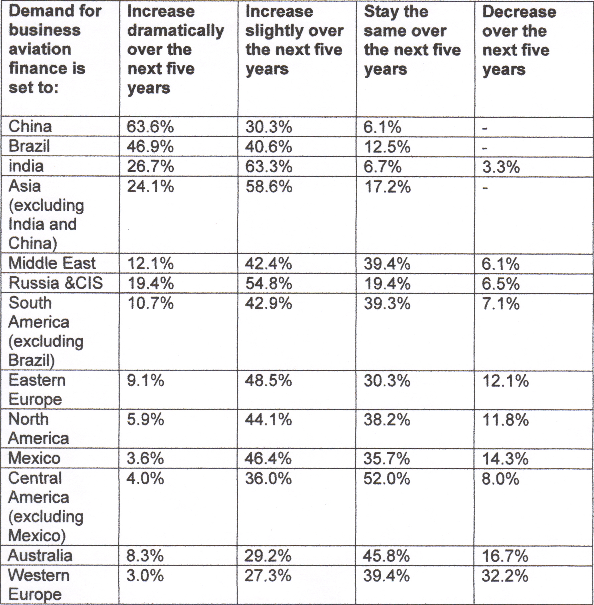
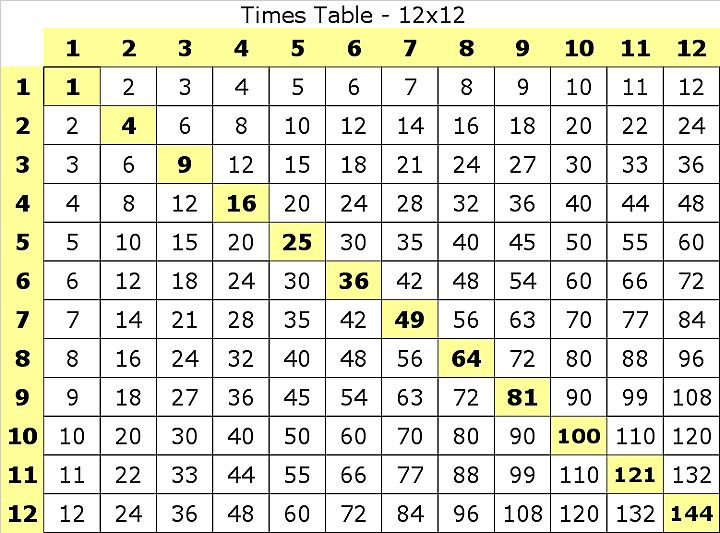
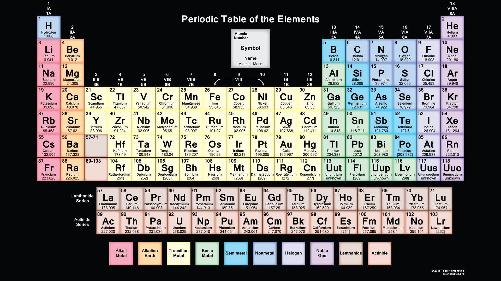
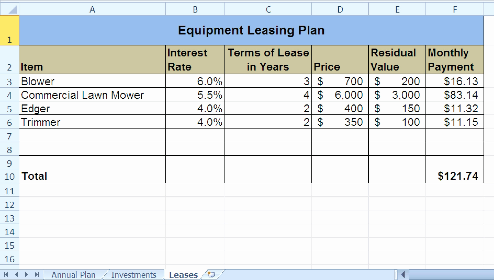

Tables and figures in scientific papers are wonderful ways of presenting data. Effective data presentation in research papers requires understanding your reader and the elements that comprise a table. Tables have several elements, including the legend, column titles, and body.
Mathematical tables are lists of numbers showing the results of calculation with varying arguments. Before calculators were cheap and plentiful, people would use such tables to simplify and drastically speed up computation. Tables of logarithms and trigonometric functions were common in math and science textbooks. Specialized tables were published for applications such as astronomy, celestial navigation and statistics.
Before all the naturally-occurring elements were discovered, the periodic table was used to predict the chemical and physical properties of elements in the gaps on the table. ... The table is useful for modern students and scientists because it helps predict the types of chemical reactions that are likely for an element.
A table is a data structure that organizes information into rows and columns. It can be used to both store and display data in a structured format. For example, databases store data in tables so that information can be quickly accessed from specific rows.
Boolean Algebra Truth Tables. ... The table used to represent the boolean expression of a logic gate function is commonly called a Truth Table. A logic gate truth table shows each possible input combination to the gate or circuit with the resultant output depending upon the combination of these input(s).